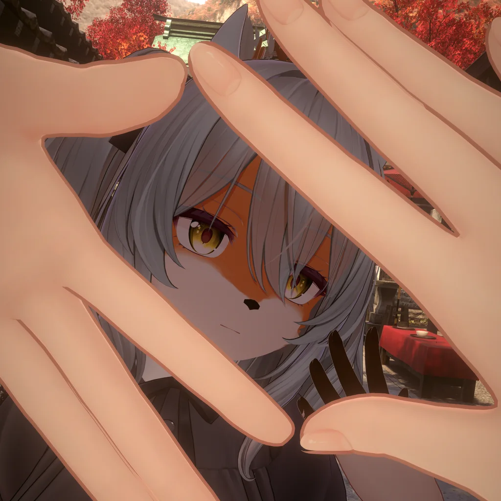
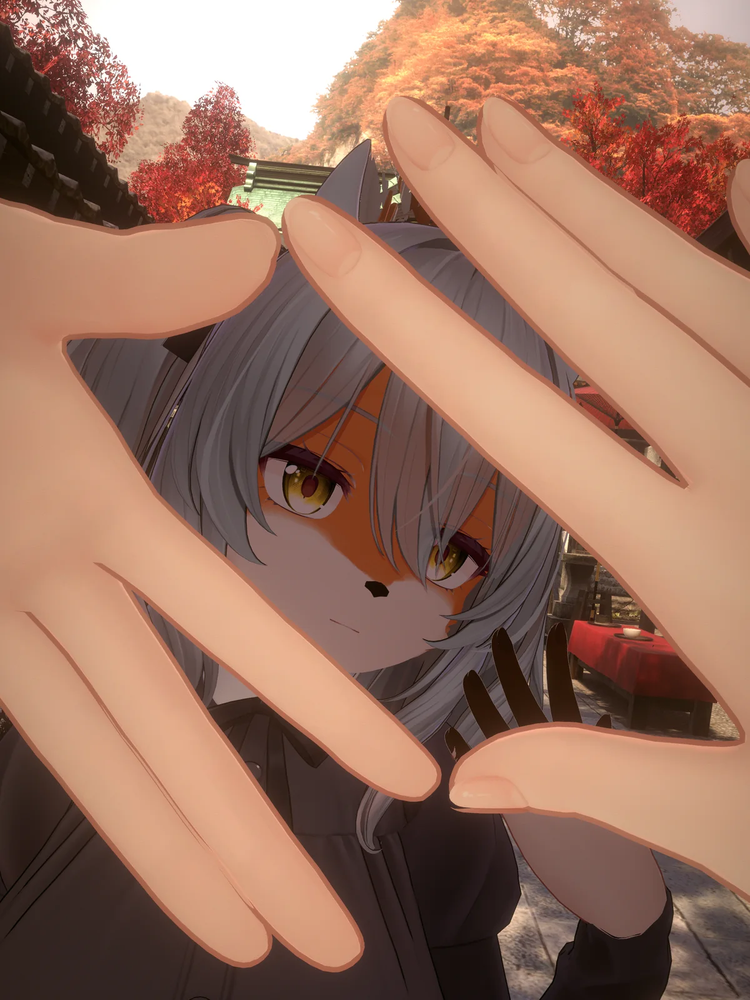

指の窓
両手のピースの指先を合わせた菱形（輪っかも）を窓と見分け、窓越しに見えたところだけが窓の中の姿で描かれます。
指の
公開したら BOOTH と X でお知らせします。

指を組んで小さな窓をこしらえ、その隙間から覗くと、化けているものの正体が見える――。「狐の窓」と呼ばれる、古くからの言い伝えです。
このギミックは、その窓をあなたのアバターに宿します。両手のピースの指先を合わせて菱形の窓（輪っかも）をつくると、その窓越しに覗いたところだけ、あなたの姿が、もうひとつの姿に変わります。窓の外は、いつもの姿のままです。

両手のピースの指先を合わせた菱形（輪っかも）を窓と見分け、窓越しに見えたところだけが窓の中の姿で描かれます。
ゲーム内メニューから、手のひらの上に狐の形の窓枠を出せます。大きさは手の大きさに合わせます。
窓越しに見たところだけ、窓の中の姿になります。着たときやワールドに入ったときは、いつも OFF から始まります。
窓をつくらなくても、全身が窓の中の姿になります（鏡の中も）。
自分の画面でだけ、全身が窓の中の姿になります。まわりの人には、いつもの姿のまま見えます。
VRChat のカメラで撮った写真に、それぞれの見え方のとおり写ります。
日本語のセットアップ画面で5つの手順を選ぶだけ。元のアバターには手を加えず、コピーに入れます。取り外しもセットアップ画面からできます。
アバター用のオプションです。窓の中に別のアバターを出す「変身」と「鬼火」があります。本体と一緒に入れて使います。
ワールドに
泡を頭に被ると、その人の画面でだけ、ほかの人の窓の中の姿が見えます（指で窓を作らなくても見えます）。ワールドを作る方向けで、ワールド用のプロジェクトに入れます。
今は販売していません。準備ができたら BOOTH と X でお知らせします。
ワールド用の Unity プロジェクト（VRChat SDK（Worlds））に入れる別のパッケージです。アバター用のプロジェクトには入れません
自分にも、ほかの人にも被せられます
窓の中の姿が見えるのは、相手がアバターに狐の窓を入れていて「狐の窓 ON」か「窓の中のみ」を ON にしている時です
ジャンプボタンを 3 秒押し続けるか、泡の前のリセットボタンを押すと外れます
公開したら BOOTH と X でお知らせします。
路地へ戻る